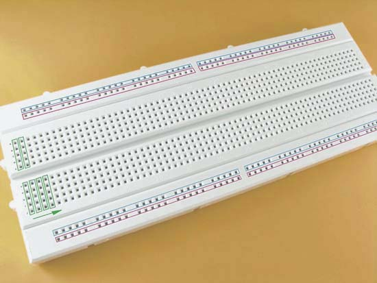
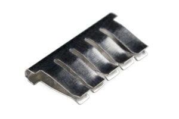
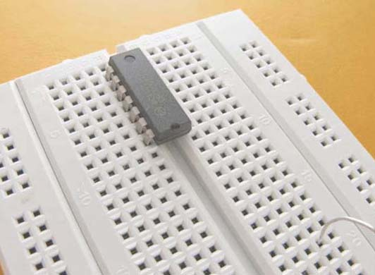
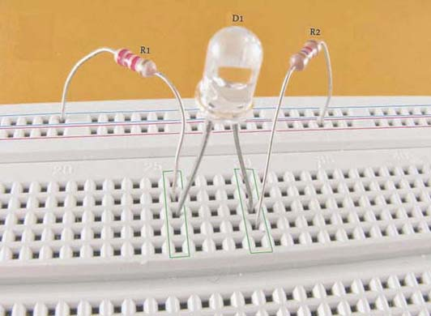
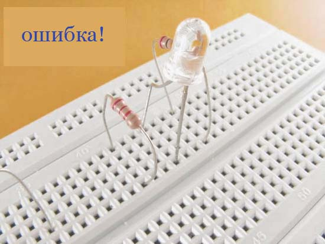
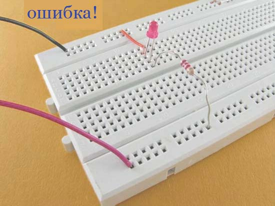
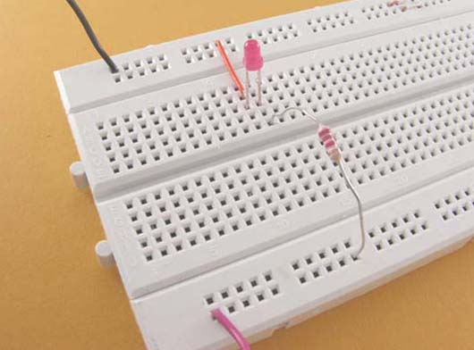
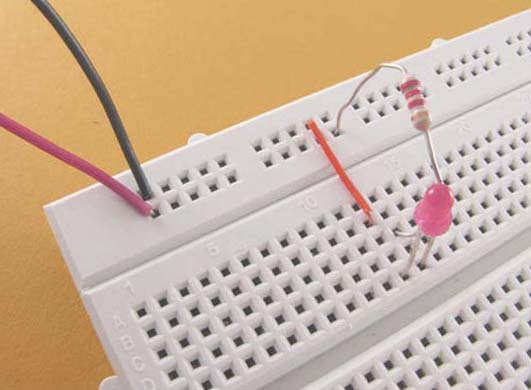
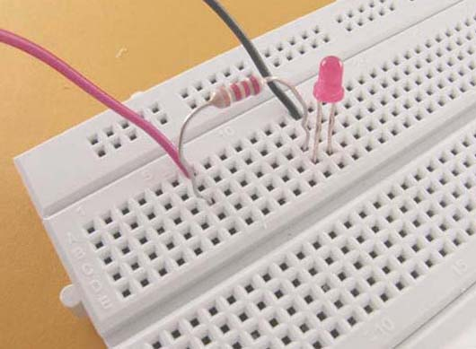

Макетная плата
Макетная плата используется для разработки и тестирования электронных схем без пайки. Макетная плата имеет отверстия, расположенные на некотором расстоянии друг от друга, в которые вставляются „ножки” электронных компонентов. Этот интервал, так называемый шаг, равен 2,54 мм (это стандартный шаг в макетных платах).

Рис. 1 - Внешний вид макетной платы
Определенные группы отверстий связаны между собой снизу платы (отмечены их цветными рамками на фото выше). Вдоль платы есть продольные шины:
- шина, обведенная красной рамкой, предназначена для подключения плюса источника питания
- шина, обведенная синей рамкой, предназначена для подключения минуса источника питания
Между продольными шинами питания у нас есть контакты, обведенные зелеными рамками – они также электрически соединены между собой. На нашей плате таких групп контактов 2 ряда по 64 в каждом ряду. В состав каждой группы входит 5 отверстий, и каждая горизонтальная линия обозначена буквами от A-E и F-J.
Внутри конструкции расположены ряды металлических пластин (рис. 2). На каждой пластине имеются клипсы, которые спрятаны в пластиковой части установки.

Рис. 2 - Элемент макетной платы Arduino
Включение проводов выполняется именно в эти клипсы. При подключении проводника к одному из отдельных отверстий, контакт одновременно подключается и ко всем остальным контактам отдельного ряда.
Отверстия секции A-E разделены большим расстоянием от отверстий секции F-J – это позволяет устанавливать микросхемы в DIP корпусе

Рис. 3 - Установка микросхемы в DIP корпусе

Рис. 4 - Пример правильного соединения электронных компонентов
Резистор R2 одной „ножкой” соединен с плюсовой шиной питания, а второй „ножкой” подает питание на группу из 5 контактов соединенных друг с другом. Затем ток проходит через светодиод D1 к следующей группе из 5 контактов, соединенных друг с другом. Далее, через резистор R1 ток возвращается к минусовой шине питания, обведенной синей рамкой.


Рис. 5 - Неправильное размещение элементов
Почему этот способ соединения является неправильным? Электрический ток, следуя от плюса к минусу, всегда выбирает кратчайший путь. Светодиод или любой другой электронный компонент оказывает ему какое-то сопротивление, так что ток предпочитает его обойти и в данном случае (на верхнем фото) после резистора ток проследует к проводу, подключенному к массе (минусу).
Поэтому верное соединение показано на рис. 6.

Рис. 6 - Правильное соединение элементов
Питание можно подать на шины с двух сторон платы (рис. 6), можно подать только с одной стороны платы (рис. 7), или подвести непосредственно к установленным компонентам (рис. 8).

Рис. 7 - Подача питания с одной стороны платы

Рис. 8 - Подача питания непосредственно к компонентам
ВНИМАНИЕ!!! Если после сборки какой-либо схемы, аккумулятор или другие компоненты (например, резисторы, транзисторы) стали горячими СРАЗУ же разъедините цепь, поскольку вероятнее всего произошло короткое замыкание (ток течет непосредственно от плюса к минусу аккумулятора, минуя другие элементы в схеме).
Это может привести к необратимому повреждению батареи или других элементов, а в случае батареи это еще может привести к воспламенению. Поэтому на первых порах рекомендуем использовать обычные дешевые батарейки, а не мощные аккумуляторы.
Источники
joyta.ru - Макетная плата – инструкция по эксплуатации
arduinomaster.ru - Как пользоваться беспаечной макетной платой Arduino breadboard